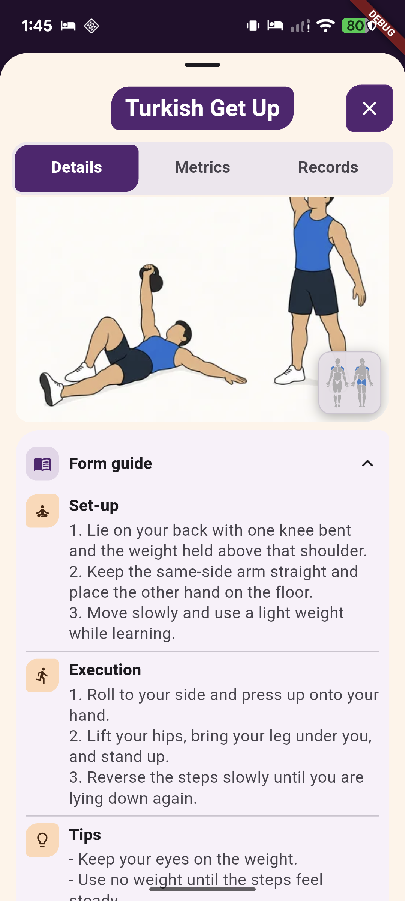
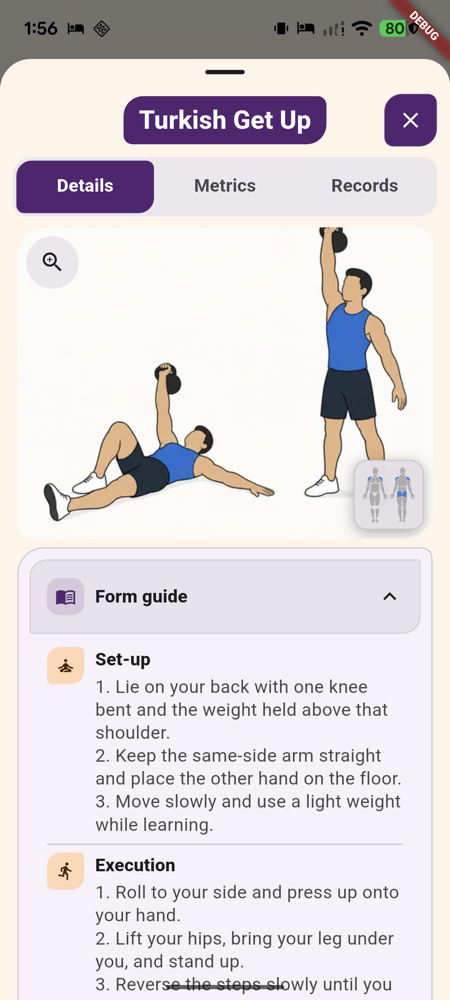
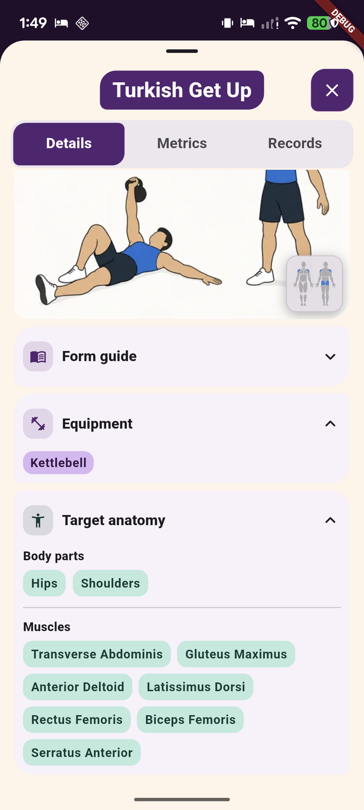
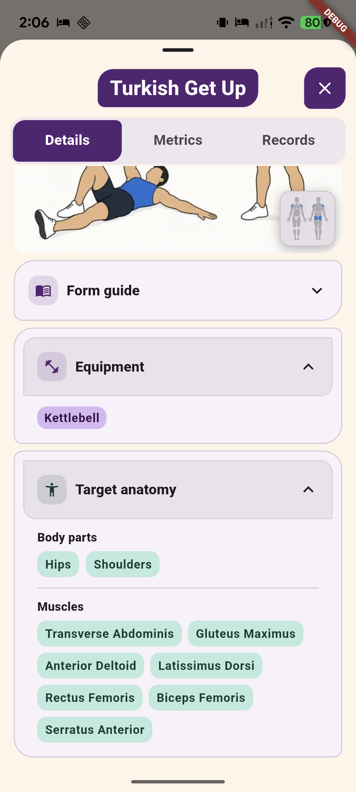
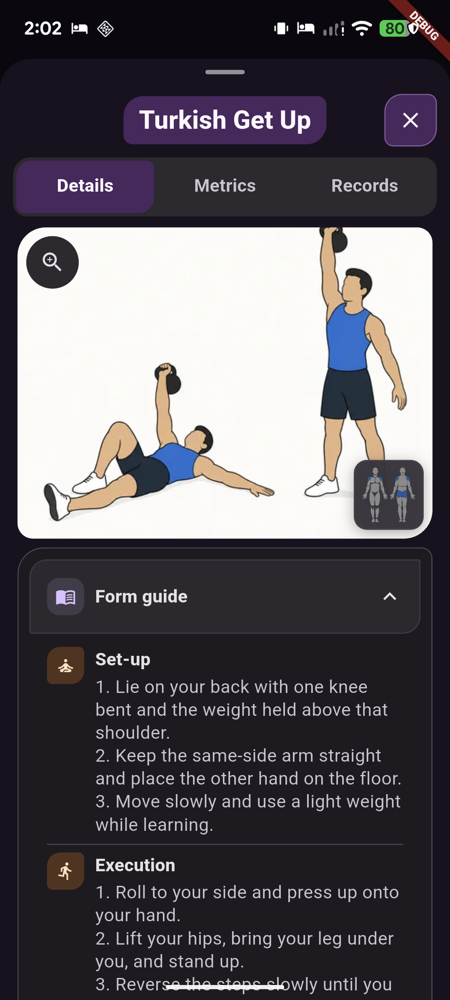
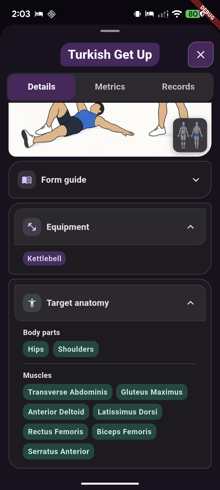
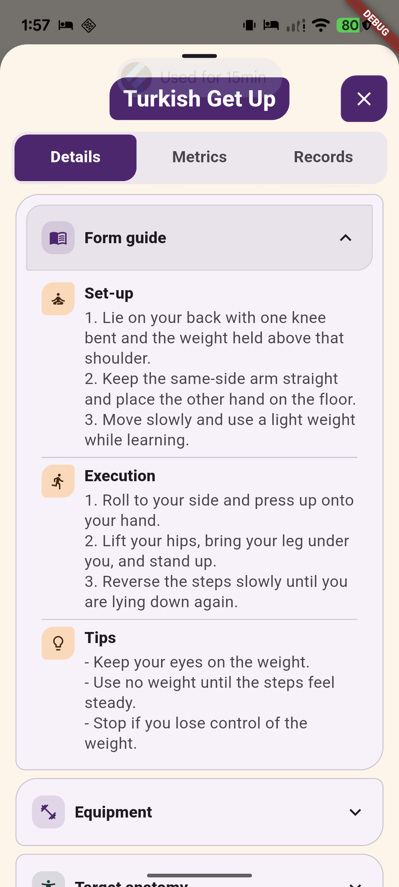

Exercise Details - adapted inset disclosures
Physical Pixel 7 captures of Turkish Get Up before and after the Details-tab refinement, 2026-10-27. Scroll positions and loaded media framing vary slightly. Click an image for its original 1080 x 2400 capture. These are review references, not a new visual approval.
Form guide - light




Equipment and Target anatomy - light




Updated dark-mode examples




Full guide content - scrolled light-mode view

